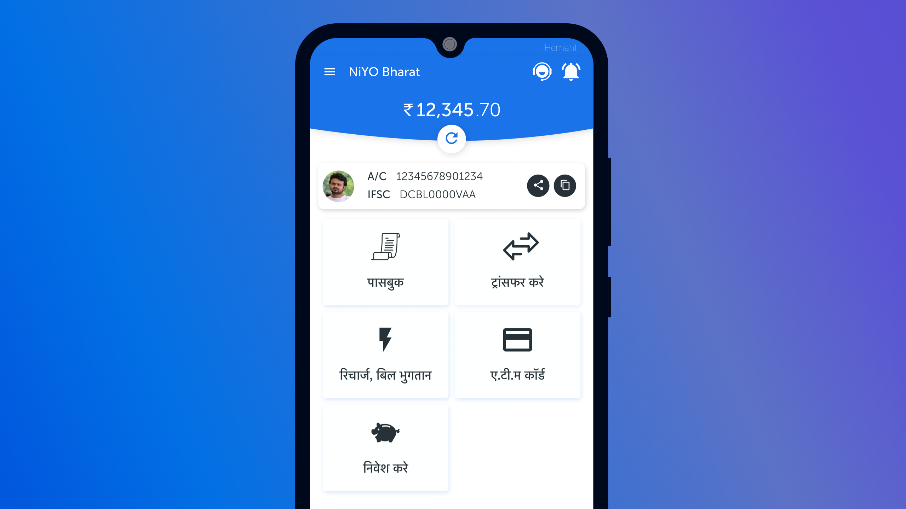

A banking app for blue-collar workers for accessing financial services.

About the Project
Niyo Bharat, is a fintech platform which facilitates opening of zero balance salary accounts for blue-collar
workers which offers unlimited fund transfers and multilingual mobile app for easy financial access to its users.
Salient Features
Lifetime Zero Balance Account
Permanent salary account, even on changing jobs
Most secure account in the industry with lock/unlock/block card options
Instant account activation
Money Transfer Anytime, Anywhere
Instant money transfer to any account
One click transfer to other Niyo accounts
Manage beneficiaries at the tip of your fingers
Multilingual and Voice assisted App
10 vernacular languages to bring services closer to you
View passbook, download custom statements
Voice assist feature that can be switched on/off
My Roles and responsibilities
Owned the product design independently, managing the product from planning research > app design > user testing.
Conducted brainstorming sessions with PMs, developers and researchers on weekly basis to discuss the progress
Conducted bi-weekly stakeholder meetings to get buy-in from the business team and founders
Took part in customer care calls to understand the user's pain points
Conducted face to face interviews with the blue-collared workers, on field and in house research efforts.